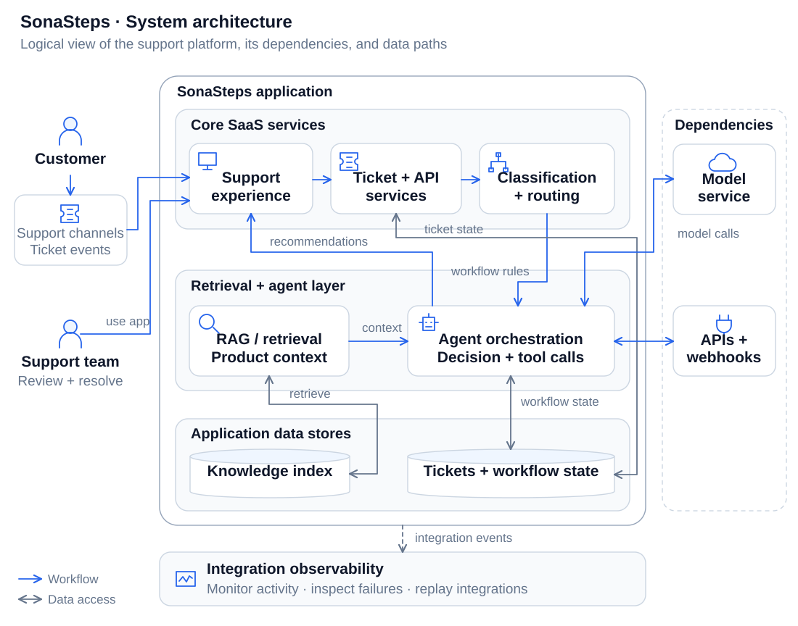
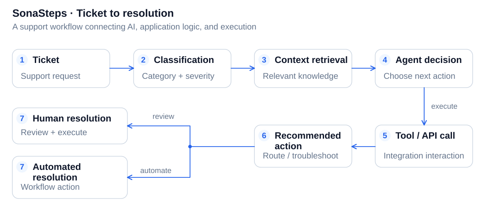

Overview
SonaSteps explores how AI agents, retrieval, APIs, and automation can work together inside a customer support platform to improve efficiency, routing, troubleshooting, and response quality.
The Problem
Support workflows often span disconnected systems. A ticket may require someone to:
- Understand the customer's message
- Determine category and severity
- Search product knowledge
- Inspect integration context
- Determine escalation risk
- Route the issue
- Troubleshoot failures
- Recommend next actions
The goal was to explore how those steps could become more intelligent without reducing the product to a generic chatbot.
The Approach
Design SonaSteps around workflows rather than isolated AI features.
AI should augment an actual SaaS support process and work alongside deterministic application logic, APIs, business rules, and human review.
Architecture
The logical architecture separates the support application, retrieval, agent orchestration, data stores, and external systems. The workflow below follows a ticket through those components.
System architecture
A logical view of the support application, its AI workflows, and the systems that provide context and tools.

Open the SVG to inspect labels, or read the diagram description below.
Diagram description
Customer and support channels send tickets into the support application. Ticket services, classification, and routing connect the support experience to ticket and workflow data.
Agent orchestration retrieves product knowledge through the RAG layer, uses a model for decisions, and connects to external APIs and webhooks through tool calls. Retrieved context and tool results inform recommended actions, with human review or automated resolution in the application workflow.
Knowledge and ticket stores supply context and state. Integration activity and failures feed monitoring, troubleshooting, and replay workflows.
Ticket to resolution
The operational path through the architecture, with human review available at resolution.

Open the SVG to inspect labels, or read the diagram description below.
Diagram description
Ticket → Classification → Context Retrieval → Agent Decision → Tool/API Call → Recommended Action → Human or Automated Resolution.
AI works alongside deterministic application logic and business rules; high-impact actions can remain available for human review.
What I Built
AI-assisted ticket classification
Classification within the support workflow.
Severity and escalation analysis
Severity and escalation context for incoming issues.
Routing recommendations
Recommended routing for support tickets.
Retrieval-augmented knowledge
Product knowledge as context for support work.
Agentic workflows
AI workflows connected to the support process.
API and webhook integrations
Connections between support and application systems.
Integration monitoring
Visibility into integration activity.
Troubleshooting / replay workflows
Workflows for inspecting and replaying failures.
Recommended actions
Suggested next steps within the support workflow.
Customer-facing support experiences
Support experiences built around customer problems.
Video Walkthrough
Business Value
SonaSteps demonstrates how AI can be integrated into an actual SaaS workflow. Retrieval, classification, routing, integrations, and recommended actions connect model capabilities to the work a support team needs to do.
The project brings more useful context and clearer next steps to a support process that combines AI, application logic, and human judgment.
Lessons Learned
- AI features become more useful when they have access to context, workflows, business rules, and tools.
- Deterministic application logic still matters.
- Observability and failure handling matter as much as model capability.
- Human review should remain available for high-impact actions.
Next Iteration
The next iteration would focus on evaluation, permissions, model observability, tenant isolation, failure handling, and human-in-the-loop controls.